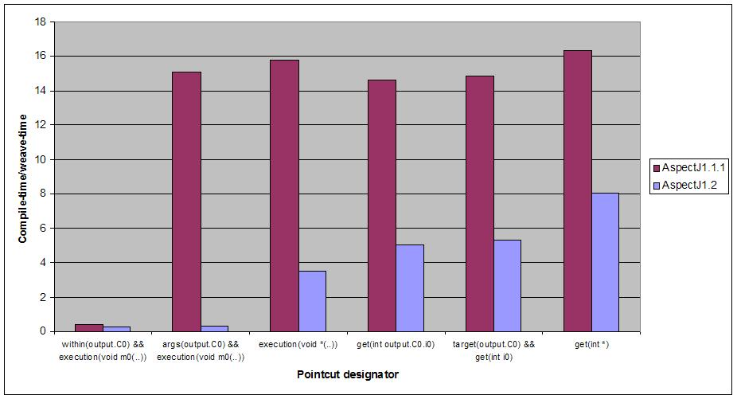
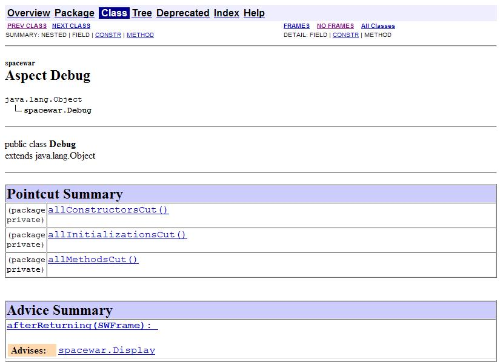
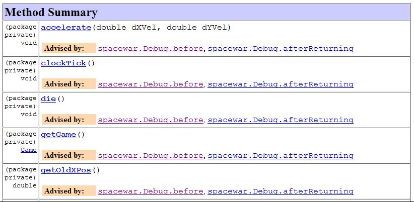

© Copyright 2003,2004 Contributors. All rights reserved.
The definition of the AspectJ language is unchanged in the 1.2 release. Instead, AspectJ 1.2 provides major improvements to the functionality of the supporting tools and enforces some language limits that went unchecked before. This document describes the tools differences between AspectJ versions 1.2 and 1.1.1. Users new to AspectJ need only read the AspectJ Programming Guide since it describes the 1.2 language. Users familiar with AspectJ 1.1 may find this document a quicker way to learn what changed in the tools, and should use it as a guide for porting programs from 1.1 to 1.2, together with porting.html.
This document first summarizes changes from the 1.1.1 release in
then details some of the changes, and finally points readers to the bug database for all the changes.
The Compiler
Compared to AspectJ 1.1.1, the AspectJ 1.2 compiler…
-
Is faster, with weaving completing in less than half the time it used to take in many cases. .
-
Supports the -XlazyTjp option which produces code that runs faster and uses less memory in some common cases.
-
Produces better error messages.
-
Has some new lint warnings to catch common mistakes and changes to serializability.
-
Supports the -Xreweavable option that allows classes to be woven more than once.
-
Supports the -inpath option which allows both directories and jars containing class files to be specified as input to the weaver.
-
Changes the default compiler compliance mode from -1.3 to -1.4.
A short description of the options ajc accepts is available with “ajc -help”. Longer descriptions are available in the Development Environment Guide section on ajc.
Support Tools
AspectJ 1.2 contains two important changes to the supporting tools:
-
ajdoc is back
-
A sample script is supplied for load-time weaving from the command-line.
The Runtime Library
This release has minor updates to the runtime library classes. As with any release, you should compile and run with the runtime library that came with your compiler, and you may run with a later version of the library without recompiling your code.
-
SoftExceptionnow supportsgetCause(). -
Although not part of
aspectjrt.jarthis release also provides a new set of tools APIs in theorg.aspectj.weaver.toolsthat provide a weaving class loader and an adapter that can be used to integrate load-time weaving into an existing class loader hierarchy. -
Cflow stack management has been modified to use thread local storage on JVMs that support this feature. This improves performance in terms of heap usage for multi-threaded applications that use cflow.
The AJDE Tools
The AJDE based tools for JBuilder, NetBeans and Emacs continue to be independent SourceForge projects. The AspectJ 1.2 distribution includes an updated version of the AjBrowser tool that benefits from all the enhancements made in the 1.2 compiler.
The 1.2 release of AspectJ also lays a lot of the groundwork for a much better AspectJ IDE experience that we hope to surface initially through AJDT (AspectJ support for Eclipse). Amongst the many improvements, we will have full eager parsing support that avoids the need to keep the whole structure model of a project in memory, hopefully making AJDT much less memory hungry and much slicker to use. For more details see the AJDT project website.
Details of some compiler changes
Compilation (weave) times reduced.
Our benchmark suite shows that AspectJ 1.2 is at least twice as fast in the weaving phase as AspectJ 1.1.1 for matches based on a variety of pointcut expressions (see the chart above). We’ve also made the base incremental compilation implementation in AspectJ 1.2 approximately twice as fast as in AspectJ 1.1.1, so when this is combined with the weave time improvements you should see speed-ups of up to 4x for incremental compilation.
In addition, AspectJ 1.2 maintains only weak references to some of its recoverable data structures, allowing the JVM to optimise between performance and memory usage. Experiments forcing GC showed that we can achieve about a 20% memory usage reduction in this manner if needed.
The -XlazyTjp option.
Under AspectJ 1.1.1, if the body of an advice contained a reference to a
non-statically determinable portion of thisJoinPoint (such as for
example a call to getArgs()), then a JoinPoint object was always
creating before entering the advice. This was the case even if the
advice was guarded with an if() pointcut that evaluated to false.
AspectJ 1.2 now supports the -XlazyTjp option that only creates the
JoinPoint object just before dispatching to the advice body. By
promoting the guard to a test in an if() pointcut, the creation of the
JoinPoint object can be avoided altogether in the case where the test
returns false.
Consider a simple tracing aspect as follows:
public aspect Tracing {
public static boolean enabled = false;
pointcut toBeTraced() : execution(* *(..)) || execution(new(..));
before() : toBeTraced() && if(enabled) {
Object[] args = thisJoinPoint.getArgs();
// format args and print out entry trace record etc....
}
}The most important consideration is the system overhead when tracing is
turned off. Using the -XlazyTjp option makes the program above run
10-100x faster, even when running a small test case with minimal GC
issues. The optimization is disabled at join points advised by around
advice, and an Xlint warning will be displayed in these cases.
Improvements to incremental compilation.
AspectJ 1.2 provides more complete incremental compilation support than
AspectJ 1.1.1. Firstly, incremental compilation resulting from a change
to a source file is now approximately twice as fast as it was under
1.1.1 (even before taking the improvements to weaving time into
account). Secondly, the incremental coverage now takes into account
changes to resources, classes and jars on the inpath, injars, and
aspectpath. The new inpath option in AspectJ 1.2 allows directories to
be specified in addition to jars (just like a classpath) as input to the
weaver. Any update, addition or deletion of a class file in a directory
on the inpath will cause incremental (re)weaving.
Changes to a jar file on the inpath, injars or aspectpath will now be detected, but will trigger a full rebuild, as will any change to the paths used to control compilation.
Improved error messages.
AspectJ 1.1.1 did not provide source context information for messages
produced during the weaving phase, even in the case where source files
were passed to the compiler. For example, an error message arising as a
result of a declare error statement might look as follows under
AspectJ 1.1.1:
BadClass.java:6 should not be calling bad methodswhereas in AspectJ 1.2 you will see:
BadClass.java:6 error should not be calling bad methods
new C().bad();
^^^^^^^^^^^^^^
method-call(void C.bad())
see also: DeclareError.java:5There are four new things to note about this error message. Firstly,
errors and warnings are now prefixed with the word "error", or "warning"
as appropriate. Secondly, the offending line of source is shown if
source code is available. Thirdly, in the case of weaver messages
arising as a result of declare error and declare warning statements,
AspectJ now shows not only the location of the error or warning, but
also the location of the declare statement itself. Finally, note that
messages produced as a result of declare error and declare warning
statements now also display the matched join point at the location of
the error:
When source code is not available, the messages show the binary input source (class file or jar file) in which the error or warning was detected:
BadClass.java:6 error should not be calling bad methods
(no source information available)
method-call(void C.bad())
see also: C:\...\DeclareError.java:5
see also: C:\...\bin-input.jarThis error message tells us that BadClass.class contained in a jar on
the inpath called bin-input.jar, and originally compiled from a source
file called BadClass.java, contains a join point
(method-call(void C.bad()) matched by a declare error statement on
line 5 of the file DeclareError.java.
New lint warnings.
Consider the program:
/*01*/ class A {
/*02*/ public void doIt() {...};
/*03*/ }
/*04*/
/*05*/ class B extends A {
/*06*/ public void doThisToo() {...};
/*07*/ }
/*08*/
/*09*/
/*10*/ public class CallsAandB {
/*11*/
/*12*/ public static void main(String[] args) {
/*13*/ B b = new B();
/*14*/ A bInDisguise = new B();
/*15*/
/*16*/ b.doIt(); // AspectJ 1.2 matches here
/*17*/ bInDisguise.doIt(); // this is never matched
/*18*/ }
/*19*/
/*20*/ }
/*21*/
/*22*/ aspect CallPCDMatchingExample {
/*23*/
/*24*/ before() : call(* B.doIt(..)) {
/*25*/ System.out.println("About to call B.doIt(...)");
/*26*/ }
/*27*/
/*28*/ }Because the static type of bInDisguise is A (line 14), the call on
line 17 is never matched by the pointcut expression on 24, even though
the runtime type of bInDisguise is B. Type patterns matched in
call pointcut designators are matched based on static type matching.
Some users have found this static type matching confusing, and AspectJ
1.2 has a new Xlint warning (unmatchedSuperTypeInCall) which is
enabled by default.
The compiler will now produce a warning whenever a call pointcut designator does not match at a join point, and a user may have expected it to. Compiling the above program using AspectJ 1.2 produces the following compiler output:
CallsAandB.java:24 warning does not match because declaring type is A, if match desired use target(B) [Xlint:unmatchedSuperTypeInCall]
before() : call(* B.doIt(..)) {
^^^^^^^^^^^^^^^
see also: CallsAandB.java:17
1 warningThe warning is telling us that the call pointcut associated with the
before advice on line 24 of the source file does not match at a join
point where the user may have expected it to. The source location
corresponding to the unmatched join point is indicated by the "see also"
line - in this case line 17 of the source file. At line 17 we find a
call to bInDisguise.doIt(). Since the static type of bInDisguise is
A, this call will never be matched. The warning also tells us a
possible solution if we intended the pointcut to match at this join
point: use call(* doIt(..) && target(B).
If you find warnings of this kind coming out when you use the AspectJ
1.2 compiler, the recommended fix is to switch to using the target
designator in place of a type pattern in the call pointcut expression.
Note that there is no loss of runtime efficiency here - runtime tests
are only added in the cases where it cannot be determined at compile
time whether the type of the receiver will match the type specified in
the target expression. Also note that target cannot be used in
declare statements.
A new Xlint warning, needsSerialVersionUIDField (disabled by default)
will produce a warning at compile time if the process of weaving changes
the default serialVersionUID of a serializable class, and the class
does not define a serialVersionUID. By defining a serialVersionUID
field, the programmer can ensure that objects serialized without the
aspect present can be read by a version of the program in which the
aspect is present, and vice-versa.
A complimentary Xlint warning, brokeSerialVersionCompatibility
(disabled by default) will produce a warning at compile time if the
process of weaving makes an incompatible change to a serializable class
(for example, through the addition of an inter-type declared field).
The -Xreweavable option.
The new -Xreweavable option produces class files that contain enough
additional information in them that they can be rewoven. In time we hope
that this can become a standard option, replacing the current
-Xnoweave option. Using reweavable produces class files that can be
legally loaded by a JVM, whereas with noweave, it is too easy to produce
class files that will result in a verify error at runtime. The
reweavable option makes it easy to weave code many times without having
to decide which weave is the final one. In a future version of the
AspectJ compiler, producing reweavable class files may become the
default option. The trade-off at the moment is that reweavable class
files are currently approximately twice the size of their non-reweavable
counterparts.
To ensure consistent semantics when reweaving, the AspectJ compiler requires that all aspects that have previously modified a class file during weaving be present in the system during a reweave. An error will be issued if any are missing.
The -inpath option.
The new -inpath option replaces the -injars option (which is still
supported for backwards compatibility). It allows both directories and
jar files to be specified using path separators to separate entries in
the path. This option makes it easy for class files produced as the
result of building one project to become binary input to the compilation
of a second project.
The default compliance mode of the compiler has changed from -1.3 to -1.4.
The default AspectJ compiler compliance level is now 1.4 (whereas in previous releases the default compliance level was 1.3). This has a number of implications:
-
class files generated by the compiler are now JRE v1.2 and upwards compatible. (At compliance level 1.3, AspectJ generated class files that were compatible with JRE 1.1 also).
-
callpointcuts may match more join points than in the same program compiled at compliance level 1.3.
The AspectJ compiler can be restored to 1.3 compliance settings by specifying the "-1.3" option on the command-line.
Consider again the following example program which illustrates the
differences in join point matching with the call pointcut designator
between 1.4 and 1.3 compliance levels.
/*01*/ class A {
/*02*/ public void doIt() {...};
/*03*/ }
/*04*/
/*05*/ class B extends A {
/*06*/ public void doThisToo() {...};
/*07*/ }
/*08*/
/*09*/
/*10*/ public class CallsAandB {
/*11*/
/*12*/ public static void main(String[] args) {
/*13*/ B b = new B();
/*14*/ A bInDisguise = new B();
/*15*/
/*16*/ b.doIt(); // AspectJ 1.2 matches here
/*17*/ bInDisguise.doIt(); // this is never matched
/*18*/ }
/*19*/
/*20*/ }
/*21*/
/*22*/ aspect CallPCDMatchingExample {
/*23*/
/*24*/ before() : call(* B.doIt(..)) {
/*25*/ System.out.println("About to call B.doIt(...)");
/*26*/ }
/*27*/
/*28*/ }When this program is compiled with AspectJ 1.2 using the default compiler options, it will produce one line of output when it is executed:
About to call B.doIt(…)
The same program compiled under AspectJ 1.1 (or using AspectJ 1.2 with the -1.3 flag specified) does not produce any output when it is run. The reason for the additional call pcd match is that prior to compliance level 1.4, Java compilers produced bytecodes that call A.doIt() (the defining type of the method), rather than B.doIt() (the declared type in the program text). The generated call to A.doIt() is not matched by the call pcd used in the before advice. At compliance level 1.4, the bytecodes retain the declared type of the receiver in the program source, generating a call to B.doIt(), which is matched by the call pcd.
This is a good example of why the recommended style is to use
call(* doIt(..)) && target(B), which always matches based on the
actual type of the receiver.
The ajdoc tool makes a comeback in the AspectJ 1.2 distribution.
ajdoc (the AspectJ replacement for the javadoc tool) is once again
included in the AspectJ distribution. The ajdoc tool produces regular
javadoc that also shows advises and advised by relationships next to
methods and advice. A future enhancement will show inter-type
declarations in the target class too.
Known limitations: Please note that ajdoc documents advice and
pointcut members, shows where advice applies and links affected members
back to the advice. It currently does not document or add structural
links for any inter-type declarations or other declare forms.
Run the "ajdoc.bat" script just as you run javadoc. For a list of
accepted parameters run "ajdoc -help". For example, to document
everything in the Spacewar example run:
> cd examples
> ajdoc -d doc -private spacewar coordination
ajdoc sample output for an aspect source file:

ajdoc sample output for advised methods:

A sample script is supplied that supports load-time weaving from the command-line
The AspectJ 1.2 distribution ships with sample scripts for Windows and
Unix platforms that exploit AspectJ’s binary weaving capabilities at
application load time. You will find these scripts in the
doc/examples/ltw directory of your AspectJ installation.
The scripts allow you to set an environment variable, ASPECTPATH,
containing a path-separator delimited list of aspect-library jar files.
A Java application can then be launched using the “aj” script (“aj”
is to “ajc” as “java” is to “javac”). If the ASPECTPATH is unset
or empty, “aj” behaves exactly the same as “java”, but if the
ASPECTPATH contains one or more aspect libraries, the aspects in the
library will be linked (woven) with the application code as it is
loaded.
The doc/examples/ltw directory of your AspectJ installation contains a
sample application that demonstrates these capabilities. Following the
instructions in the README file in that directory, running
“aj tracing.ExampleMain” with ASPECTPATH unset produces the output:
c1.perimeter() = 12.566370614359172
c1.area() = 12.566370614359172
s1.perimeter() = 4.0
s1.area() = 1.0
c2.distance(c1) = 4.242640687119285
s1.distance(c1) = 2.23606797749979
s1.toString(): Square side = 1.0 @ (1.0, 2.0)If you set ASPECTPATH to include ../jars/tracingLib.jar, and run
“aj tracing.ExampleMain” again, the output will be:
--> tracing.TwoDShape(double, double)
<-- tracing.TwoDShape(double, double)
--> tracing.Circle(double, double, double)
<-- tracing.Circle(double, double, double)
--> tracing.TwoDShape(double, double)
<-- tracing.TwoDShape(double, double)
--> tracing.Circle(double, double, double)
<-- tracing.Circle(double, double, double)
--> tracing.Circle(double)
<-- tracing.Circle(double)
--> tracing.TwoDShape(double, double)
<-- tracing.TwoDShape(double, double)
--> tracing.Square(double, double, double)
<-- tracing.Square(double, double, double)
--> tracing.Square(double, double)
<-- tracing.Square(double, double)
--> double tracing.Circle.perimeter()
<-- double tracing.Circle.perimeter()
c1.perimeter() = 12.566370614359172
--> double tracing.Circle.area()
<-- double tracing.Circle.area()
c1.area() = 12.566370614359172
--> double tracing.Square.perimeter()
<-- double tracing.Square.perimeter()
s1.perimeter() = 4.0
--> double tracing.Square.area()
<-- double tracing.Square.area()
s1.area() = 1.0
--> double tracing.TwoDShape.distance(TwoDShape)
--> double tracing.TwoDShape.getX()
<-- double tracing.TwoDShape.getX()
--> double tracing.TwoDShape.getY()
<-- double tracing.TwoDShape.getY()
<-- double tracing.TwoDShape.distance(TwoDShape)
etc...The scripts only support JDK 1.4 and above - attempting to use them with
a 1.3 or lower JDK will most likely produce NoClassDefFound errors. We
welcome contributions from users to improve these scripts.
SoftException now supports getCause()
org.aspectj.lang.SoftException now supports the getCause() method,
which returns the original exception wrapped by the SoftException.
This means that exception chains will print correctly on 1.4 and later
JREs.
org.aspectj.weaver.tools package added
A new set of public APIs are exported by the
org.aspectj.weaver.tools package that can be used
to integrate load-time weaving into an existing class loader hierachy.
The package implementation is included in aspectjtools.jar. For an
example of how to use these APIs, see the
org.aspectj.weaver.WeavingURLClassLoader implementation.
All changes are listed in the bug database
For a complete list of changes in the 1.2 release, search for
target 1.2 in the bug database:
https://bugs.eclipse.org/bugs/buglist.cgi?product=AspectJ&component=Compiler&target_milestone=1.2